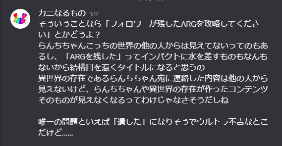

わたしが接触したフォロワー、かにけん氏はどうやら異世界の人らしい。
どうやら向こうはてっきり、わたしの好きな作品達をわたしが生み出した、いわゆる一次創作だと思って接触してきたらしい。字書きを明言してたから、かわいいイラスト達は全部依頼して描いてもらったものだと思ったらしい。18↓を明言してる人がそんなに依頼できるお金あると思う、とツッコミたいところだけど、まあ異世界に繋がってるなんて普通思わないもんね……。
おかしいと思ったわたしから提案して、かにけんさんとの認識のすり合わせをしてみた。ニチアサアニメといえば。その放送局といえば。深夜魔法少女アニメで一番有名な作品といえば。和風魔法少女アニメといえば、魔法少女ラノベといえば、日常魔法少女モノといえば、といった具合に、色々なジャンルの筆頭タイトルとその公式ビジュアルの画像を送り合って認識のすり合わせをした。
結果、わたし達が連絡に使っていたツールや、出会ったSNSの名前すら違うことが分かった。違うのに、同じだと認識して連絡を取り合っていた。わたし達は、「わたし達のインターネットは異世界に繋がっている」と結論を出した。
かにけんさんが言うには、日月村がないのは当然として、白地村すら存在しないらしい。山上県の名前はわたしがフィクションと言い張るために廃藩置県当初のそれから借用したものなので、少なくとも都道府県レベルでは一致しているようだけど、逆に言えばそれ以上細かいところについては差異があるようだ。地形に関してもかにけんさんに送ってもらった地図の野洲川の本流は全然違うところを流れていたし、白地村がある場所は山があるようで、白地村が存在できるような平地なんてなかった。おそらく村そのものが、教会の儀式によって作られた──そもそも存在してはいけないはずの土地なのだ。
ともあれ、かにけんさんが生きている世界は異世界であることだけは確実だ、とわたしは判断した。そして、他のフォロワーとの通話等を使って互いにそれとなく探った結果、わたし達の目が届く範囲で異世界と繋がったインターネットに接続しているのは、わたしとかにけんさんだけらしい。そこでわたしは、かにけんさんに全部預ければ、万一村が総力を上げてわたしの身元を探ったとしても、Webサイトを削除することなんてできなくなる。調べた限り、使うSNSの名前や同じポジションにある作品の名前すら違うほどの異世界との接続が確認されているのは、今のところわたしとかにけんさんの間だけ。そもそもわたしが制作したWebサイトが発見される可能性すら極めて低いと言って構わない。かにけんさんも引き受けていいよと言ってくれたし、ページが完成した後は全面的に任せるのが正解だろう。
わたしが自分で決めたタイトルは微妙に気に入っていないから、かにけんさんに任せたいって言ったら、こういう提案をもらった。

わたしはこの提案を承諾して、「フォロワーが残したARGを攻略してください」をタイトルにしてもらうことにした。不吉なのはまぁ、そうなんだけど……でも、そんなことより見てもらうことのほうがずっと重要なので、しょうがない！万一ほんとにわたしが死んだら遺したにしていいよって言っておいた。まぁ連絡手段があるかと言われると──なんだけど……。
ともあれ、万一これを見ている人がいたら、その時「遺した」になってないことを祈っておこう。わたしだって、別に死にたいわけじゃない。わたしも思春期なので思うところは色々あるんですが、死にたくない理由もやっぱり色々あるし……。
これであとは、わたしの目論見がちゃんと達成されることを祈るだけ。全部、うまくいきますように……！